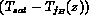
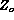

The onset of nucleate boiling indicates the location where the vapor can first exist in a stable state on the heater surface without condensing or vapor collapse. As more energy is input into the liquid (i.e., downstream axially) these vapor bubbles can grow and eventually detach from the heater surface and enter the liquid. In our past discussion we have suggested that the onset of nucleate boiling occurs at an axial location (Point A on Figure 6.4) before the bulk liquid is saturated (Point C on Figure 6.4). Likewise the point where the vapor bubbles could detach from the heater surface would also occur at an axial location (Point B on Figure 6.4) before the bulk liquid is saturated. Now this axial length over which boiling occurs when the bulk liquid is subcooled is called the "subcooled boiling" length. This region may be large or small in actual size depending on the fluid properties, mass flow rate, pressures and heat flux. It is a region of inherent nonequilibrium where the flowing mass quality and vapor void fraction are non-zero and positive even though the thermodynamic equilibrium quality and volume fraction would be zero (Figure 6.4 and X(z)); since the bulk temperature is below saturation.
There are two ways to handle this region. Consider the boundary condition of a uniform heat flux on the heater surface. First, for conditions where this is a small actual length relative to the total heater wall axial length, one may neglect this length and its effect on heat transfer and pressure drop. If the subcooled boiling length is appreciable relative to the total heater wall length, then we need to locate the point where the vapor bubbles detach and boiling bubbles are stable in the flow as well as the associated vapor mass fraction and void fraction in this subcooled region.
Figure 6.5 depicts the order of magnitude of the vapor void fraction and mass fraction for a steam-water system, as well as lists the various models available for estimating values for this region. The typical approach is to determine the amount of vapor superheat necessary to support the vapor bubble departure from the heater wall surface (Point B on Figure 6.4). Once this is determined one can find the axial location where this would occur. From this point on one can then calculate the vapor void fraction and mass fraction in the channel.
As Figure 6.5 indicates there are only a few complete models developed for the subcooled region. In these notes we focus on the models developed by Levy (1967) and Zuber (1968) based on relatively good agreement with published data, and the relative ease in applying the subcooled boiling model. These models, although developed and checked with primarily steam-water data, can be applied to other fluids.
The first objective is to determine the amount of superheat necessary to allow vapor bubble departure and then the axial location where this would occur. A force balance was used by Levy (1967) and Staub (1967) to estimate the degree of superheat necessary for bubble departure.
where is the radius of vapor bubble at departure, and where the first term represents the buoyancy force (destabilizing force), the second term represents the drag force (destabilizing force), and final force term is due to surface tension (stabilizing force); where , and are proportionality constants. In this conceptual model the bubble radius , is assumed to be proportional to the distance to the tip of the vapor bubble, , away from the heated wall. One can then calculate this distance
where the constant is based on empirical data and the buoyancy force was found to be negligible. Levy's fundamental assumption was that the temperature at the tip of bubble, with size , should be at least the saturation temperature,  . This superheat temperature, , was then found by using the universal temperature profile relation between and .
. This superheat temperature, , was then found by using the universal temperature profile relation between and .
Now using the local energy balance one can relate the local bulk temperature, , to the superheat temperature difference at location B,
Then the energy balance along the length of the channel can be used to find the axial location of bubble departure, ,
The final term in the Levy model for and  to determine is tw given by
to determine is tw given by
where the single phase friction factor is used for this estimate. Zuber proposed an empirical relation to determine  given by
Once the location of vapor bubble departure is determined, one then knows the subcooled boiling region and the total subcooled boiling length; onset of nucleate boiling ( Point A, Figure 6.4), vapor bubble departure, (  , Point B) and saturated boiling point ( , Point C). The next step is to model the axial variation in quality and void fraction. Levy used an semi-empirical approach to estimate the non-equilibrium variation in void and quality. It was assumed that the "true" mass fraction, x(z), is related to the thermodynamic equilibrium quality,
, Point B) and saturated boiling point ( , Point C). The next step is to model the axial variation in quality and void fraction. Levy used an semi-empirical approach to estimate the non-equilibrium variation in void and quality. It was assumed that the "true" mass fraction, x(z), is related to the thermodynamic equilibrium quality,  , by the relationship
, by the relationship
where is the thermodynamic equilibrium quality at the point of bubble departure (Point B of Fig. 6.4), given by Eqn (6.1). This simple empirical relationship satisfies the following physical boundary conditions:
The void fraction is found by the drift flux model given by
where is the one-dimensional average inlet velocity of the liquid, Co is the drift flux distribution parameter ( 1.1 chosen by Levy), and is the drift velocity given by
One should note that since the void in subcooled boiling is near the wall, the common concept of Co is questionable for this application.
Zuber took a similar approach in which an axial liquid temperature distribution was arbitrarily chosen between the point of zero void fraction,  , and the point where the non-equilibrium effects become negligible,  (Point D). Based on the logic presented previously one could take (Point A) and
(Point D). Based on the logic presented previously one could take (Point A) and  (Point B). The "true" quality is given by
(Point B). The "true" quality is given by
Zuber also used the drift flux model to predict the void fraction and used a constant of 1.41 instead of 1.18 in expression for drift velocity.
Either model gives a complete estimate of the subcooled boiling region for location, quality and void. With this description one can then calculate the two-phase pressure drop in the subcooled region and modify the single phase heat transfer coefficient in the energy balance (Eqns. 6.2 - 6.4) to determine the wall temperature given the heat flux. In the following section we discuss how to do this with the two-phase heat transfer coefficient. The treatments of Levy and Zuber fit the experimental data reasonably, and both can be applied to other fluids than water.